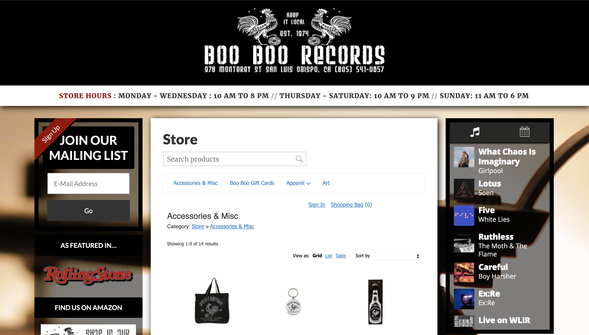

Final project proposal
Introduction
Nygaard Records
Nygaard Records is your number one local shop to find all the best records.
Target audience
The target audience is local music and vinyl enthusiasts and collectors.
This website is used to promote the local store and to showcase some of the merchandise in the store.
Comparative analysis
Boo Boo Records
Waterloo Records

Joe's Albums
Website content
Home
Welcome to Nygaard Records! We are a locally owned and run record shop that prides itself in carrying only the best records. We carry a wide variety of records from all different artists, and have a big supply of both new and used vinyl. Come on in and discover a new treasure!
[A record spinning on a player.]
Hours and Events
We are open Monday – Friday from 8am – 10pm and 8am – 12pm on weekends!
Every weekend we host community events, anywhere from listening parties to showcases of local bands, come check out the fun!
[A band playing on a stage.]
Recommendations
Here are our top album recommendations of the month!
- Depression Cherry - Beach House
- Demon Days - Gorillaz
- Heaven or Las Vegas - Cocteau Twins
- This Old Dog - Mac DeMarco
- Loveless - My Bloody Valentine
[Album covers.]